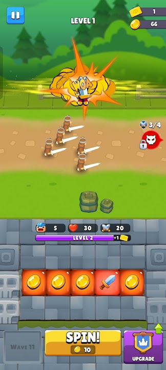

About the Game
Hybrid mobile RPG combining slot-machine combat mechanics with unit upgrades, wave-based battles, boss encounters, and progression loops.



Hybrid mobile RPG combining slot-machine combat mechanics with unit upgrades, wave-based battles, boss encounters, and progression loops.
Primary Unity developer on the project at Utin Computers: built and refined core progression systems, unit upgrades, boss & enemy wave spawning, bonus slot machine mechanics, win-probability UI indicators, game balancing, and VFX/SFX polish.